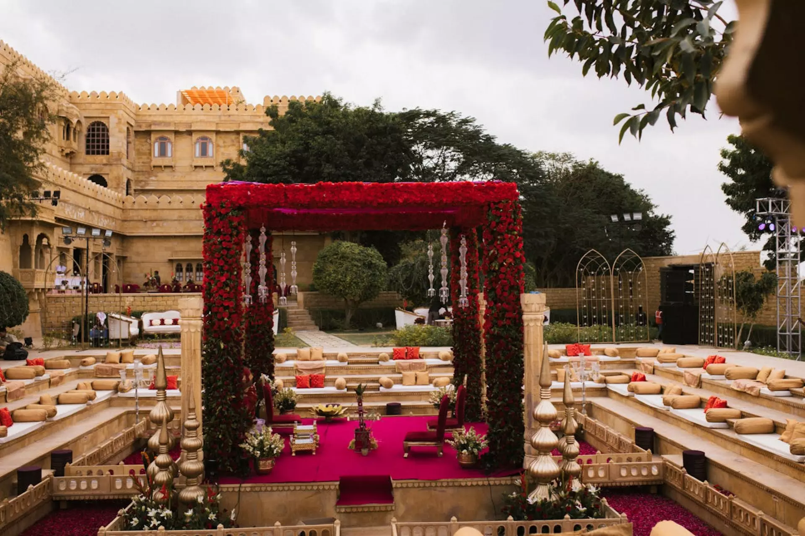
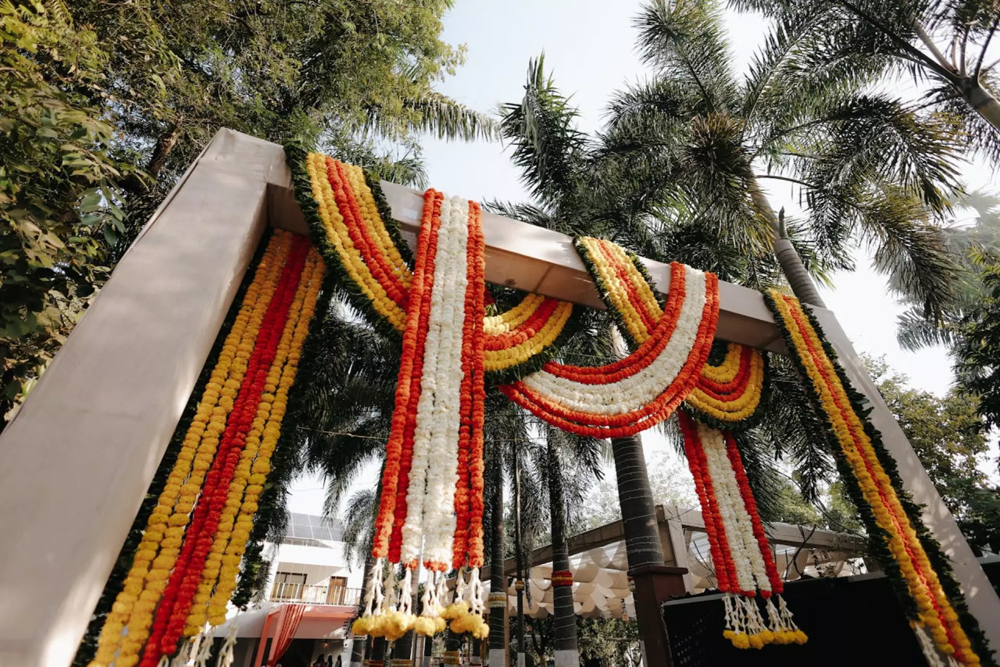
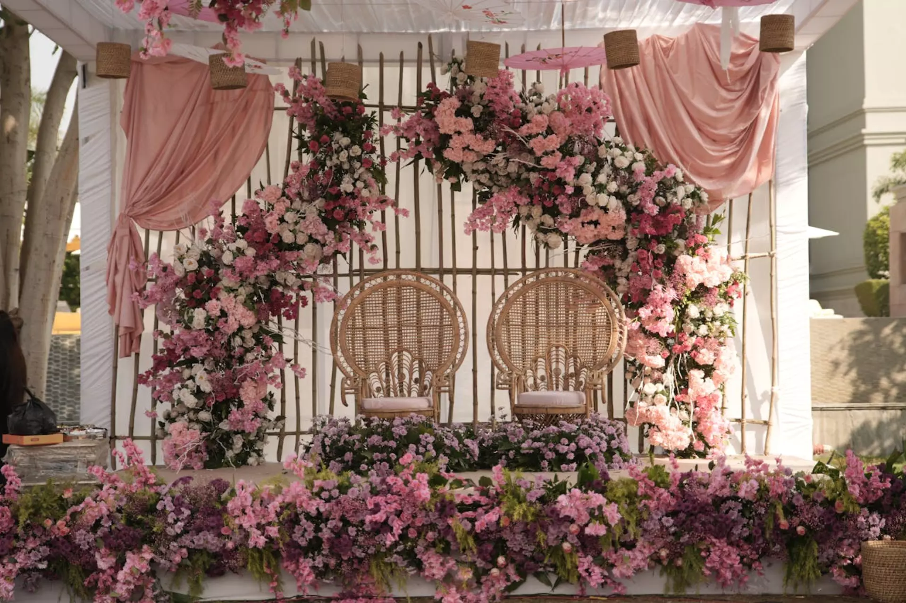
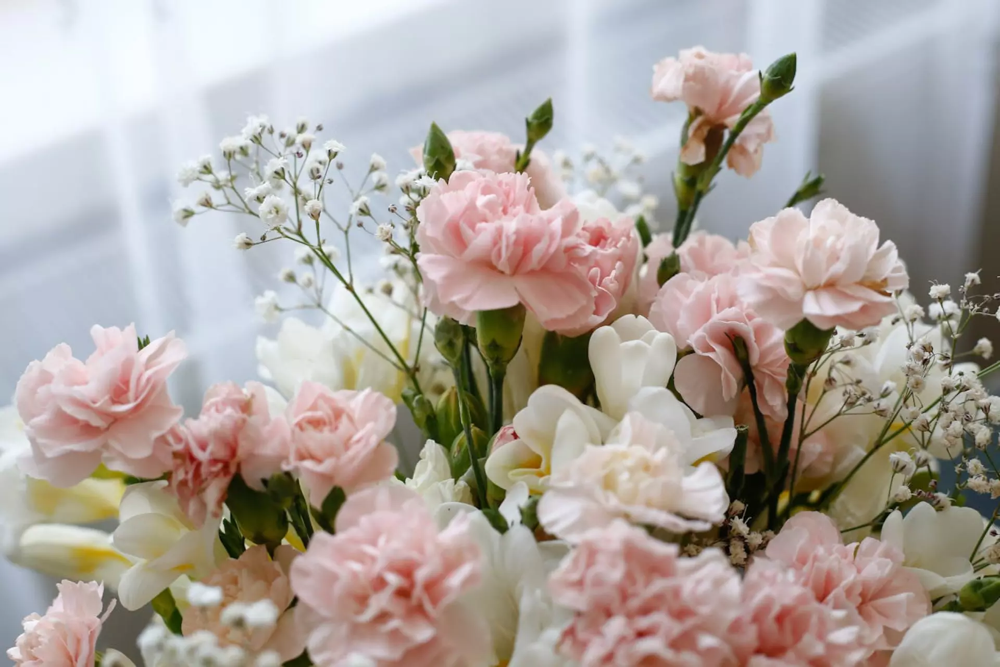
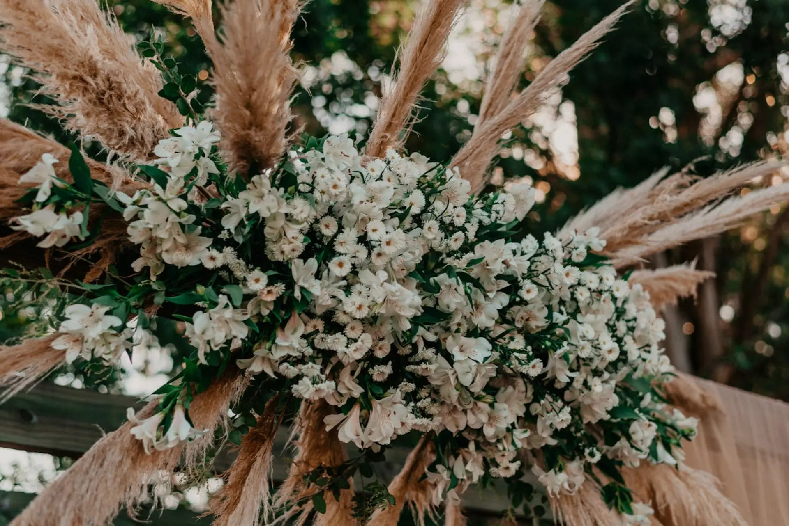

The mandap is the sacred heart of any Indian wedding. It is where vows are exchanged and unforgettable memories are forged. The floral decoration of the mandap sets the tone for the entire wedding, reflecting the couple's personality, cultural heritage, and the event's overall aesthetic.
Whether you're an event decorator planning a luxurious installation or a couple deciding on a theme, choosing the right flowers is crucial. In this guide, we explore the best flowers for mandap decoration, from timeless traditional blooms to opulent luxury imported varieties.
Factors to Consider Before Choosing Mandap Flowers
Before diving into flower varieties, consider the structural and environmental factors of the wedding:
- Indoor vs Outdoor Mandap: Outdoor mandaps require heat-resistant flowers, whereas indoor mandaps allow for delicate blooms like hydrangeas.
- Seasonal Availability: Off-season flowers will drive up costs significantly. Stick to seasonal blooms for better freshness and budget management.
- Weather and Durability: Wind, direct sun, and humidity will affect the vase life of your floral structures.
- Theme and Palette: Ensure your flowers complement the wedding attire and overall event theme (e.g., pastel hues vs. vibrant traditional reds and yellows).
Most Popular Flowers for Mandap Decoration
1. Roses: The Timeless Classic

Roses are the foundation of luxury wedding decor. They offer a romantic aesthetic and come in almost every color imaginable. Red roses are perfect for traditional Indian aesthetics, while white and pastel pink (Avalanche and Revival varieties) are ideal for modern luxury themes.
2. Marigold: The Soul of Tradition

No Indian wedding is complete without the vibrant hues of marigolds (Genda Phool). Highly budget-friendly and culturally significant, orange and yellow marigolds are perfect for haldi, mehndi, and traditional mandap backdrops.
3. Orchids: Modern Luxury

For a premium, tropical, and modern touch, orchids (specifically Dendrobium and Phalaenopsis) are spectacular. They add cascading texture and an exotic feel to contemporary mandap designs.
4. Carnations: Volume and Affordability

If you need massive volume coverage without breaking the budget, carnations are your best friend. Their ruffled petals mimic the texture of peonies or premium roses from a distance, making them an excellent choice for full floral walls and pillars.
5. Baby's Breath (Gypsophila): Ethereal Elegance

Gypsophila is no longer just a filler. Dense clouds of Baby’s Breath are trending for minimalist, elegant, and "floating" mandap ceiling installations. It pairs beautifully with pastel roses.
Best Flower Combinations for Wedding Mandaps
- Red and White: Classic, bold, and highly traditional. Red roses combined with white tuberoses or jasmine.
- Pastel Palettes: Blush pink roses, white carnations, and peach gerberas for daytime outdoor weddings.
- Royal Luxury: Deep purple orchids mixed with pristine white roses and lush green foliage (eucalyptus or ruscus).
Luxury vs. Budget-Friendly Flowers
Premium Luxury Decor
For high-end luxury mandaps, decorators often source imported flowers. Exotic orchids, hydrangeas, peonies, and tulips instantly elevate the visual value of the stage. However, these require strict temperature control and expert handling.
Budget-Friendly Volume
For large-scale events where budget maximization is key, decorators rely on high-impact, affordable blooms. Combining a base of carnations, marigolds, and local chrysanthemums with strategic filler flowers like Queen Anne's Lace or Statice allows for massive, stunning structures without excessive costs.
| Flower | Durability | Budget | Luxury Look | Best Season |
|---|---|---|---|---|
| Roses | High | Moderate - High | Very High | All Year (Best in Winter) |
| Marigold | Very High | Low | Traditional | All Year |
| Orchids | High | High | Very High | All Year |
| Carnations | Very High | Low - Moderate | Moderate | All Year |
| Hydrangeas | Low (Wilts easily) | Very High | Ultra Premium | Spring / Early Summer |
How to Keep Mandap Flowers Fresh
To ensure your floral installations survive a 48-hour event window:
- Keep stems deeply hydrated in buckets with floral food before installation.
- For outdoor mandaps, delay the floral installation until the latest possible moment to avoid wilting in the sun.
- Use water tubes (floral vials) for delicate blooms like hydrangeas and orchids on the mandap pillars.
- Mist the flowers lightly with water a few hours before the ceremony.
"The secret to a stunning mandap is not just the flower variety, but how well you hydrate and protect them during the setup phase."
How Event Decorators Source Bulk Flowers
Successful event decorators rely on farm-direct sourcing and wholesale flower supply to ensure quality and control costs. By partnering directly with a bulk flower supplier like Fleur Vine, decorators guarantee export-grade, fresh-cut flowers delivered with strict cold-chain logistics right to the venue.
Frequently Asked Questions (FAQs)
Which flowers are best for mandap decoration?
Roses, marigolds, orchids, and carnations are the most reliable and popular choices for mandap decoration, offering a mix of tradition, volume, and luxury.
Which flowers last longest in wedding mandaps?
Carnations, orchids, and marigolds have excellent durability and can easily survive multi-day events without water tubes if pre-hydrated correctly.
Are fresh flowers better than artificial flowers for weddings?
While artificial flowers are reusable, fresh flowers provide unmatched fragrance, authenticity, and premium aesthetic value that elevates the entire wedding experience and photography.